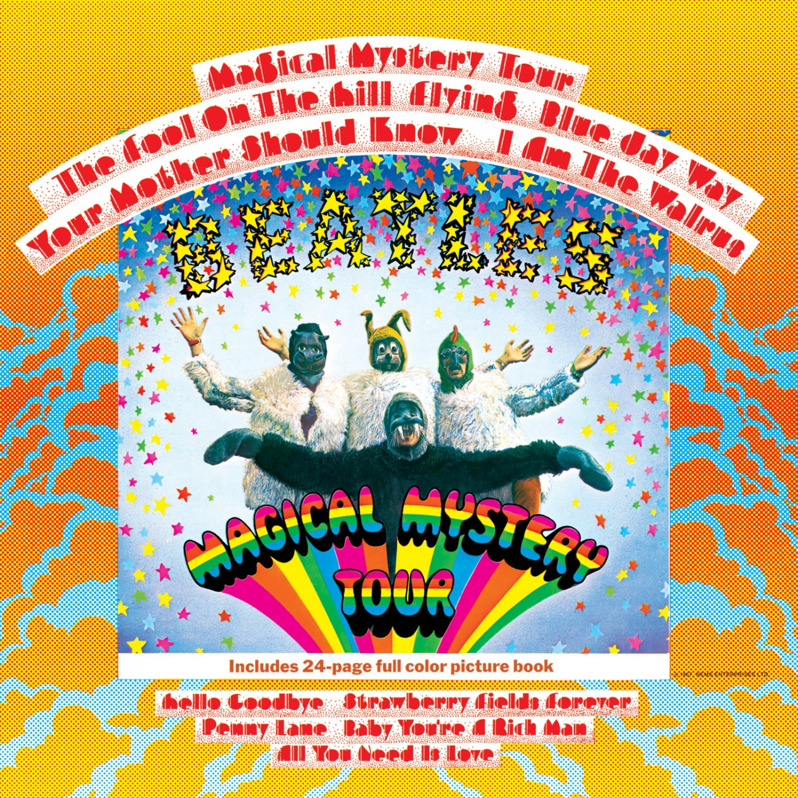
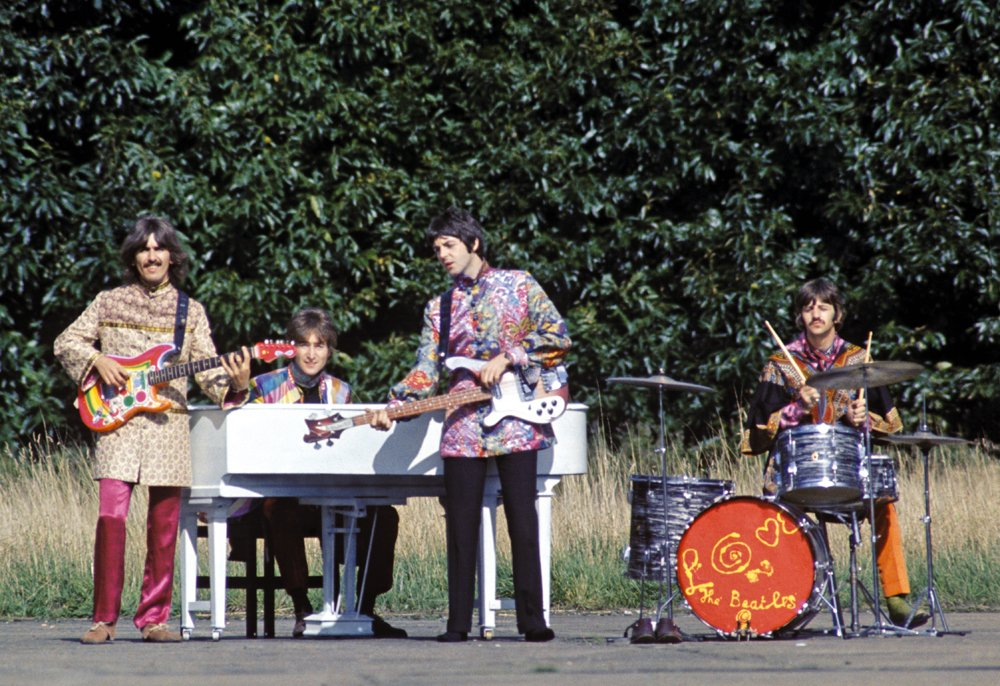
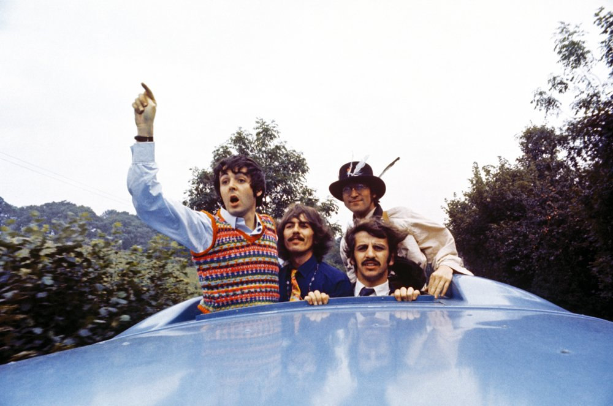

- Magical Mystery Tour
- The Fool On The Hill
- Flying
- Blue Jay Way
- Your Mother Should Know
- I Am The Walrus
- Hello Goodbye
- Strawberry Fields Forever
- Penny Lane
- Baby You're A Rich Man
- All You Need Is Love
Magical Mystery Tour

Data de lançamento: 27 de novembro de 1967
Os Beatles conceberam, escreveram e dirigiram um filme de televisão chamado Magical Mystery Tour, que foi transmitido pela BBC Television no Natal de 1967. Mesmo antes de Sgt. Pepper's Lonely Hearts Club Band ter chegado às lojas, a ideia do programa tinha nascido e o trabalho tinha começado na faixa-título.

Foi decidido que a trilha sonora do programa seria lançada em dois discos de sete polegadas, que seriam embalados com um livreto em uma capa de dobra de portão. O livreto continha fotos do show, juntamente com uma história em quadrinhos contando a história. Uma folha lírica também foi grampeada no centro-espalhado do livreto. O EP foi um sucesso estrondoso e alcançou o número 2 na parada de singles do Reino Unido, mantido fora do primeiro lugar por seu próprio single... "Olá, Adeus".
Nos EUA, o formato de EP duplo não era considerado viável, então, em vez disso, a Capitol Records criou um álbum colocando as seis músicas do EP no lado um de um álbum e desenhando o lado dois dos títulos que haviam aparecido em singles em 1967. Esses títulos eram "Strawberry Fields Forever", "Penny Lane", "All You Need Is Love" - seu hino que havia sido transmitido para todo o mundo via satélite em junho. "Baby, You're A Rich Man" e seu single atual, "Hello, Goodbye". O lançamento nos EUA fez # 1 no início de janeiro de 1968 e ficou lá por oito semanas. Sua execução inicial nas paradas durou 59 semanas.

1967 tinha sido certamente um ano de grandes realizações, mas também foi tingido de tristeza. Brian Epstein, empresário dos Beatles desde 1961, faleceu em 27 de agosto de 1967, aos 32 anos.
A configuração dos EUA para a Magical Mystery Tour foi mais tarde adotada por muitos outros países (incluindo o Reino Unido em 1976). Quando o catálogo dos Beatles foi lançado pela primeira vez em Compact Disc em 1987, Magical Mystery Tour se juntou à lista principal de títulos.